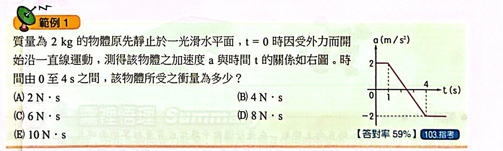
看答案與詳解收起
答(B)
解
a–t 圖面積 ＝ Δv：
- 0～1 s：2 × 1 ＝ 2
- 1～4 s：由 2 直線降到 −2，上下兩塊三角形面積相等，合計 0
Δv ＝ 2 m/s ⇒ 衝量 ＝ mΔv ＝ 2 × 2 ＝ 4 N·s
| 工具 | 內容 | 本單元拿來做什麼 |
|---|---|---|
| 牛頓第二定律 | ΣF ＝ ma；加速度 a ＝ Δv/Δt（速度每秒改變多少） | 推出「衝量 ＝ 動量變化」 |
| 牛頓第三定律 | 甲推乙、乙推甲，兩力大小相等、方向相反、同時出現同時消失 | 內力互相抵消 ⇒ 動量守恆 |
| 向量的正負號 | 一直線上的運動，先規定一個方向為正，反方向就寫負號 | 動量、衝量都有方向 |
| 重心（第 4 單元） | 以重量為權重的平均位置 | 質心公式長得一樣 |
| 力矩（第 4 單元） | τ ＝ rF sinθ ＝ F × 力臂 | 焦點 3 的角動量 |
要解決的問題：球撞牆、車相撞的那一瞬間，力變化得極快，根本量不到 F 隨時間怎麼變；但撞擊前後的速度很好量。能不能只靠前後的速度，算出撞擊的效果？
| 符號 | 意思 | 單位 | 方向 |
|---|---|---|---|
| p | 動量 | kg·m/s | 和速度 v 同方向 |
| m | 質量 | kg | — |
| v | 速度（有方向，用正負號表示） | m/s | — |
| J | 衝量 | N·s | 和力 F 同方向 |
| F | 作用力（力在變時取平均力） | N | — |
| Δt | 力作用的時間 | s | — |
| 物體 | 質量 | 速度 | 動量 |
|---|---|---|---|
| 子彈 | 0.01 kg | 600 m/s | 6 kg·m/s |
| 棒球 | 0.15 kg | 40 m/s | 6 kg·m/s |
| 慢跑的人 | 60 kg | 3 m/s | 180 kg·m/s |
| 汽車 | 1000 kg | 15 m/s | 15000 kg·m/s |
子彈很輕但很快，動量可以和棒球一樣——所以「難不難擋」要質量和速度一起看。
方向一定要算進去：0.5 kg 的球以 10 m/s 撞牆，以 10 m/s 反彈。規定「朝牆」為正：
Δp ＝ p後 − p前 ＝ 0.5 × (−10) − 0.5 × (＋10) ＝ −10 kg·m/s
大小是 2mv ＝ 10，不是 0（速度大小沒變，但方向整個反過來）。
| 符號 | 意思 |
|---|---|
| ΣF | 合力：物體受到的所有力的向量和 |
| Δt | 合力作用的時間 |
| Δp | 動量的變化 ＝ p後 − p前 |
「合力推了多久，動量就改變多少。」反過來：動量要改變的量一樣時，作用時間愈長，需要的力就愈小。
60 kg 的人以 15 m/s（54 km/h）撞車後停下：Δp ＝ 60 × 15 ＝ 900 kg·m/s（大小），不管撞到什麼都一樣。
| 撞到 | 停下所需時間 Δt | 平均力 F ＝ Δp/Δt | 約是體重的幾倍 |
|---|---|---|---|
| 方向盤 | 0.01 s | 90000 N | 約 150 倍 |
| 安全氣囊 | 0.2 s | 4500 N | 約 8 倍 |
同一個道理：接球時手往後收、跳遠落在沙坑、跳下時彎膝蓋——都是拉長 Δt 來降低平均力。
要解決的問題：爆炸的砲彈、在船上走的人——整個系統裡每一部分都在亂動，有沒有一個點的運動很單純？
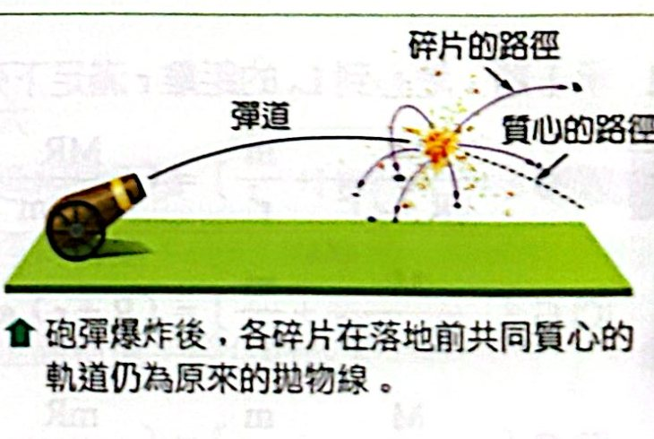
| 符號 | 意思 |
|---|---|
| m1、m2… | 系統內各物體的質量 |
| r1、r2…（公式前半） | 各物體的位置座標（要先選一個原點） |
| rCM | 質心的位置（CM ＝ center of mass） |
| r1、r2（雙質點比例式） | 兩物體各自到質心的距離 |
「質心 ＝ 以質量為權重的平均位置」——質量大的，說話比較大聲，質心就靠近它。
這和第 4 單元的重心公式一模一樣（地表附近重力場均勻時，兩者是同一點）。
| 符號 | 意思 |
|---|---|
| M | 系統總質量 ＝ m1 ＋ m2 ＋ … |
| Σmivi | 每個物體的動量全部加起來 ＝ 系統總動量 |
| vCM、aCM | 質心的速度、加速度 |
| ΣF外 | 系統外面的東西施給系統的力，全部加起來 |
人（m）在船（M）上，相對船走了 L；設船往反方向退了 x：

a–t 圖面積 ＝ Δv：
Δv ＝ 2 m/s ⇒ 衝量 ＝ mΔv ＝ 2 × 2 ＝ 4 N·s
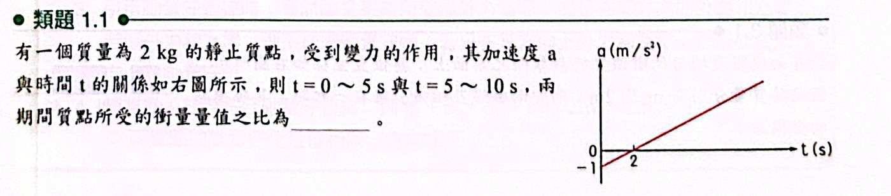
由圖 a ＝ −1 ＋ t/2（t ＝ 0 時 −1，t ＝ 2 時 0）。衝量 ∝ a–t 面積：
比 ＝ 1.25 : 13.75 ＝ 1 : 11
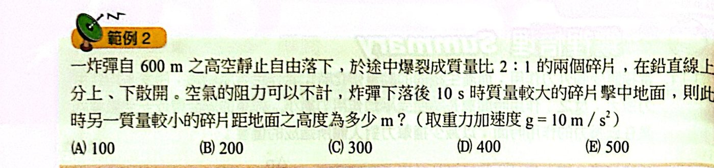
爆炸是內力，質心照樣自由落下：10 s 後落下 ½ × 10 × 100 ＝ 500 m ⇒ 質心高度 100 m
大片（質量 2）在地面：2 × 0 ＋ 1 × h ＝ 3 × 100 ⇒ h ＝ 300 m
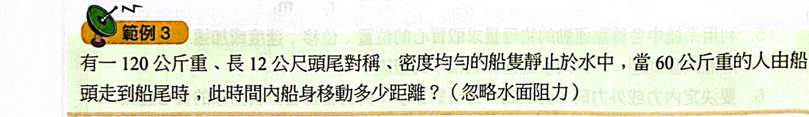
質心不動：人相對船走 12 m，船退 x：60(12 − x) ＝ 120x ⇒ x ＝ 4 m
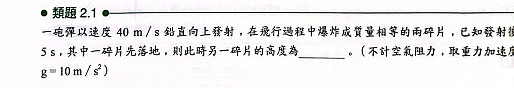
質心照常作鉛直上拋：y ＝ 40 × 5 − ½ × 10 × 25 ＝ 75 m
兩片等質量，一片在地面（0）⇒ 另一片 ＝ 2 × 75 ＝ 150 m
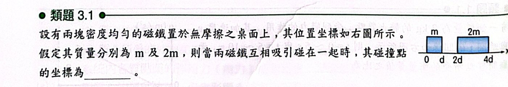
兩磁鐵之間是內力，質心不動：xCM ＝ [m(d/2) ＋ 2m(3d)]/3m ＝ 13d/6
碰在一起時，碰撞點為 c：m 在 [c − d, c]、2m 在 [c, c ＋ 2d]
質心 ＝ [m(c − d/2) ＋ 2m(c ＋ d)]/3m ＝ c ＋ d/2 ＝ 13d/6 ⇒ c ＝ 5d/3
要解決的問題：碰撞、爆炸時內部的力又大又亂，能不能完全不管它，直接由「前」算出「後」？
| 符號 | 意思 |
|---|---|
| p1、p2… | 事件（碰撞、爆炸）之前各物體的動量 m1v1、m2v2… |
| p1′、p2′… | 事件之後各物體的動量（右上角一撇 ＝ 之後） |
| ΣF外 | 系統外面施給系統的力的總和 |
「系統不受外力（或外力互相抵消）時，大家的動量加起來，事件前 ＝ 事件後。動量只是在系統內部換手，總量不會多也不會少。」
碰撞（上面動畫）：甲 2 kg、3 m/s 撞靜止的乙 1 kg，撞後甲 1 m/s、乙 4 m/s（向右為正）。
開槍的後座：4 kg 的槍射出 0.01 kg、400 m/s 的子彈，原本都靜止。
動量是向量，可以一個方向一個方向看。哪個方向沒有外力，哪個方向的動量就守恆。
例：光滑地面上的盒子裡單擺在擺，鉛直方向有重力、正向力（不守恆），但水平方向沒有外力 ⇒ 水平動量守恆。
Δp1 ＝ −Δp2：兩者動量變化大小相同、方向相反。但速度變化不一樣：Δv ＝ Δp/m，質量小的速度變得多。
例：上面的碰撞，甲 Δv ＝ −2 m/s、乙 Δv ＝ ＋4 m/s；開槍時子彈 400 m/s、槍只有 1 m/s。
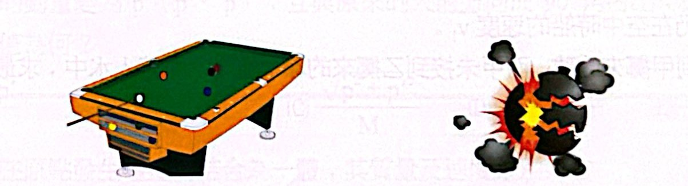
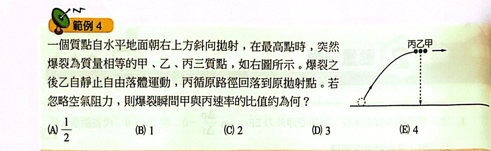
最高點只有水平速度 v，三塊質量各 m：
3mv ＝ m v甲 ＋ 0 ＋ m(−v) ⇒ v甲 ＝ 4v ⇒ 甲 : 丙 ＝ 4
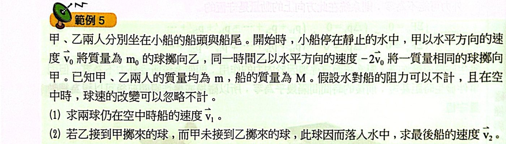
取整個系統（船、兩人、兩球），水平方向不受外力，原本靜止 ⇒ 總動量 0。
(1) 兩球在空中：m0v0 ＋ m0(−2v0) ＋ (M ＋ 2m)v1 ＝ 0 ⇒ v1 ＝ m0v0/(M ＋ 2m)
(2) 乙接住甲的球（回到船上），乙擲的球落水帶著 −2m0v0 離開：
(M ＋ 2m ＋ m0)v2 ＋ (−2m0v0) ＝ 0 ⇒ v2 ＝ 2m0v0/(M ＋ 2m ＋ m0)
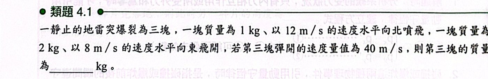
原本靜止，總動量 0：第三塊的動量要抵消前兩塊
北 1 × 12 ＝ 12、東 2 × 8 ＝ 16 ⇒ 第三塊動量 ＝ √(12² ＋ 16²) ＝ 20
m ＝ 20/40 ＝ 0.5 kg
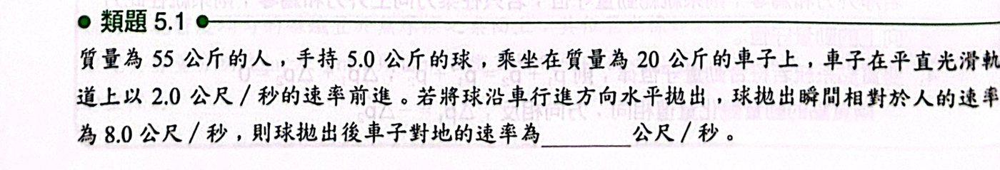
球相對人 8 m/s ⇒ 對地 V ＋ 8
(55 ＋ 5 ＋ 20) × 2 ＝ 75V ＋ 5(V ＋ 8) ⇒ 160 ＝ 80V ＋ 40 ⇒ V ＝ 1.5 m/s
（注意「相對於人」的速度要換成對地速度才能代入動量守恆。）
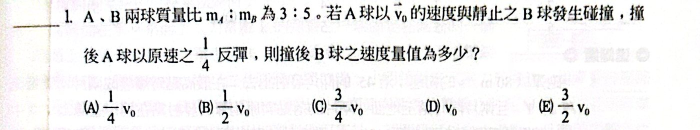
3v0 ＝ 3(−v0/4) ＋ 5vB ⇒ 5vB ＝ 15v0/4 ⇒ vB ＝ 3v0/4
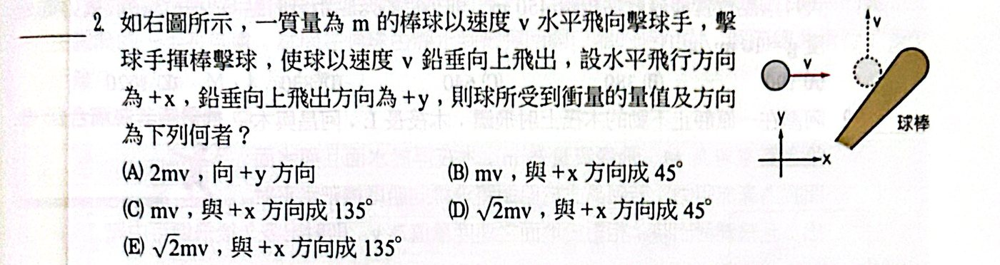
衝量 ＝ Δp ＝ (0, mv) − (mv, 0) ＝ (−mv, mv) ⇒ 量值 √2mv，指向左上，與 +x 夾 135°
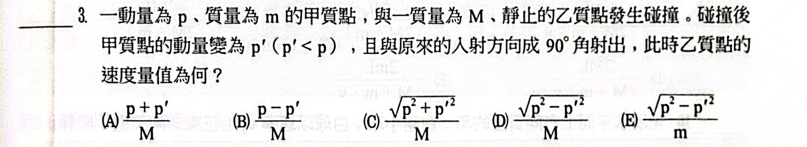
甲原本沿 x：p；碰後沿 y：p'。乙的動量 ＝ (p, −p') ⇒ 量值 √(p² ＋ p'²)，速度 ＝ √(p² ＋ p'²)/M
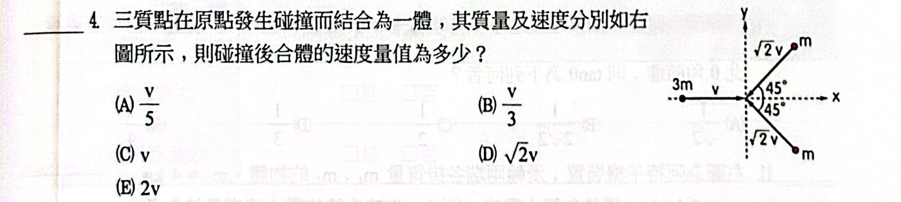
三者都朝原點運動而碰撞：
總動量 (mv, 0)，總質量 5m ⇒ v/5
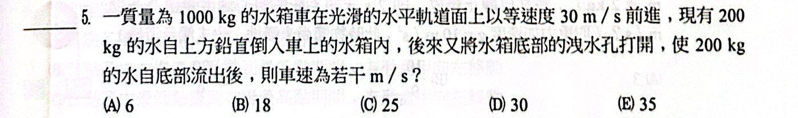
倒水：1000 × 30 ＝ 1200V ⇒ V ＝ 25 m/s
水從底部流出時帶著和車相同的水平速度離開，不會推車也不會拉車 ⇒ 車速仍為 25 m/s
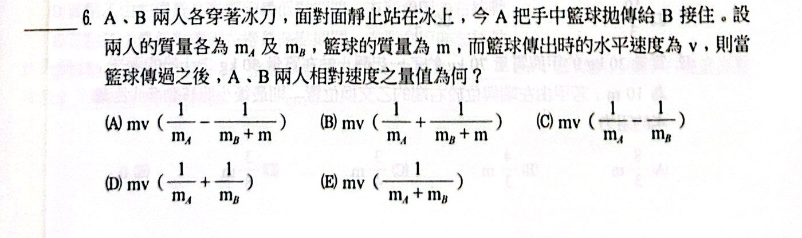
A 擲球後：mAvA ＝ mv ⇒ vA ＝ mv/mA（向後）
B 接球後：(mB ＋ m)vB ＝ mv
兩人反方向 ⇒ 相對速度 ＝ mv[1/mA ＋ 1/(mB ＋ m)]
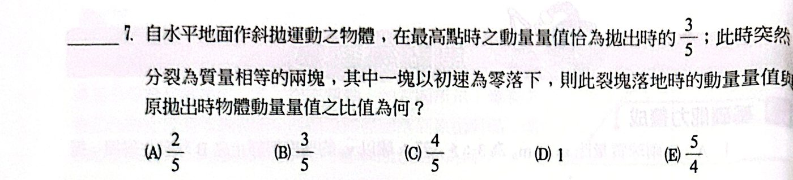
最高點只剩水平分速，動量是拋出時的 3/5 ⇒ vx ＝ 3v0/5，vy0 ＝ 4v0/5
一塊（m/2）初速為 0 自由落下，落回地面時鉛直速度 ＝ 4v0/5
動量 ＝ (m/2)(4v0/5) ＝ 2mv0/5 ⇒ 比值 2/5
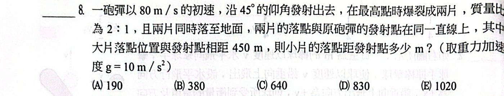
兩片同時落地 ⇒ 質心照原拋物線落到射程 R ＝ v²/g ＝ 6400/10 ＝ 640 m
(2 × 450 ＋ 1 × x)/3 ＝ 640 ⇒ x ＝ 1020 m
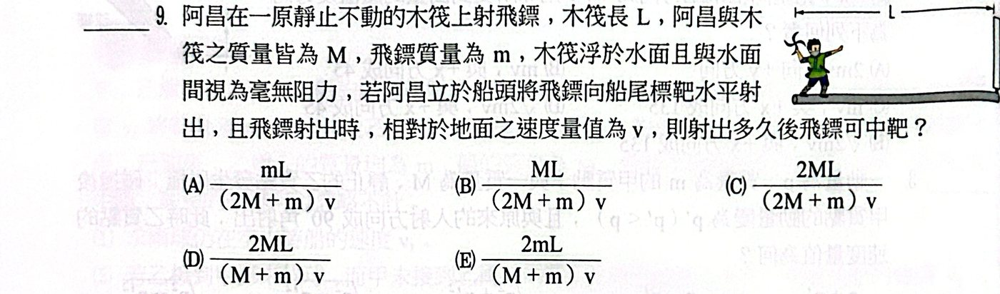
射出時：mv ＝ 2M V ⇒ 木筏（連人）後退 V ＝ mv/(2M)
飛鏢與木筏相向，相對速率 v ＋ mv/2M ＝ v(2M ＋ m)/2M
t ＝ L ÷ 相對速率 ＝ 2ML/[(2M ＋ m)v]
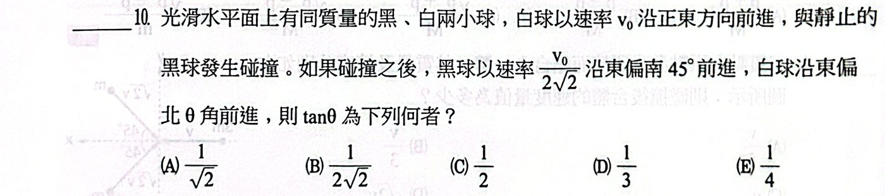
黑球 v0/(2√2) 東偏南 45° ⇒ (v0/4, −v0/4)
白球 ＝ (v0, 0) − (v0/4, −v0/4) ＝ (3v0/4, v0/4) ⇒ tanθ ＝ 1/3
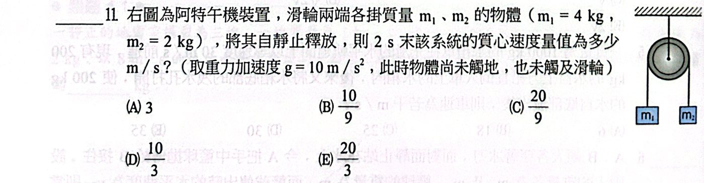
a ＝ (4 − 2) × 10/6 ＝ 10/3 m/s²，m1 向下、m2 向上
aCM ＝ [4(−10/3) ＋ 2(10/3)]/6 ＝ −10/9（向下）
2 s 後 vCM ＝ 20/9 m/s
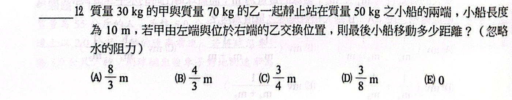
設船移動 x（向右為正），甲由左到右 ＋10、乙由右到左 −10（相對船）：
30(10 ＋ x) ＋ 70(−10 ＋ x) ＋ 50x ＝ 0 ⇒ 150x ＝ 400 ⇒ x ＝ 8/3 m
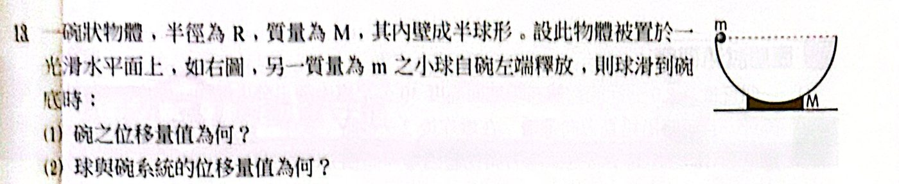
(1) 水平方向無外力，水平質心不動。球相對碗向右移 R，碗向左移 x：
m(R − x) ＝ Mx ⇒ x ＝ mR/(M ＋ m)
(2) 系統質心的水平位移為 0；鉛直方向球下降 R，質心下降 mR/(M ＋ m)。
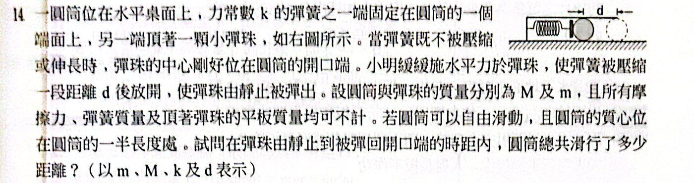
彈簧力是內力，水平方向質心不動。彈珠相對圓筒移動 d，圓筒反向移動 x：
m(d − x) ＝ Mx ⇒ x ＝ md/(M ＋ m)（與 k 無關）
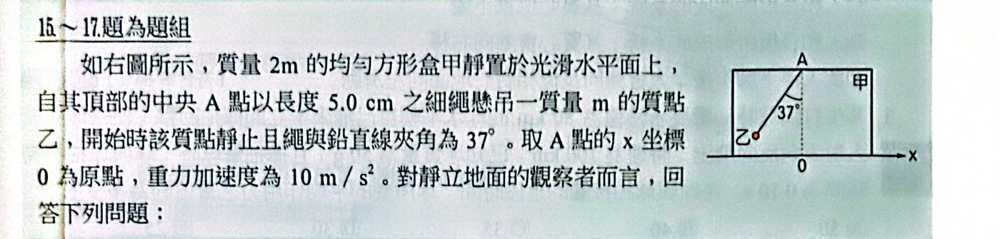
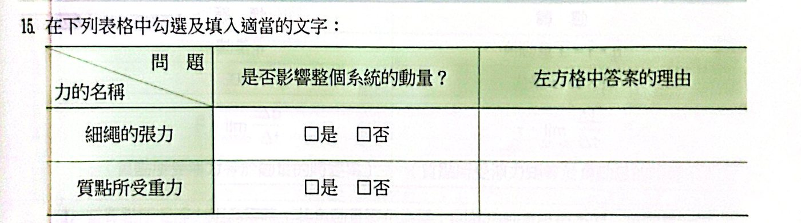
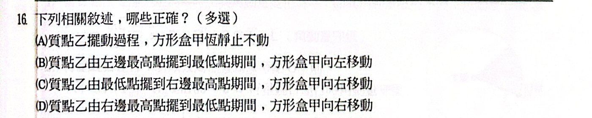
水平無外力 ⇒ 水平質心不動，乙往右時盒往左，乙往左時盒往右。
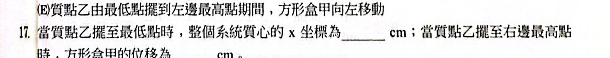
開始時乙在 x ＝ −5 sin37° ＝ −3 cm，盒的質心在 0：
xCM ＝ (2m × 0 ＋ m × (−3))/3m ＝ −1 cm，之後一直不變。
乙擺到右高點時相對盒在 ＋3，盒位移 X：2mX ＋ m(X ＋ 3) ＝ −3m ⇒ X ＝ −2 cm
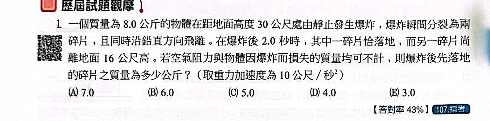
質心照常自由落下：2 s 後高度 30 − 20 ＝ 10 m
m1 × 0 ＋ (8 − m1) × 16 ＝ 8 × 10 ⇒ m1 ＝ 3.0 kg
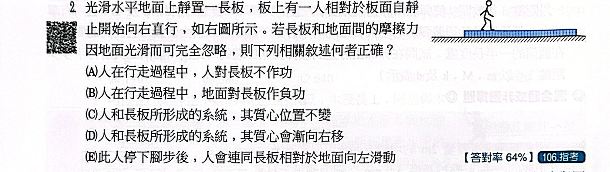
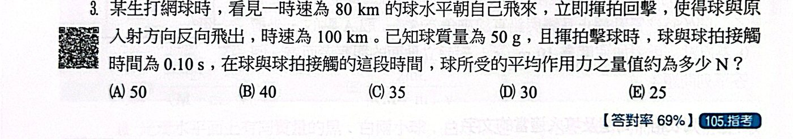
Δv ＝ 80 ＋ 100 ＝ 180 km/h ＝ 50 m/s（反向要相加）
F ＝ mΔv/Δt ＝ 0.05 × 50/0.10 ＝ 25 N
要解決的問題：溜冰選手、行星、繩子甩的球都在「繞著轉」，轉動也有一個像動量那樣的「運動量」嗎？
用類比來建：
| 移動 | 轉動 | |
|---|---|---|
| 運動量 | 動量 p ＝ mv | 角動量 L |
| 改變它的東西 | 力 F | 力矩 τ（第 4 單元） |
| 關係 | F ＝ Δp/Δt | τ ＝ ΔL/Δt |
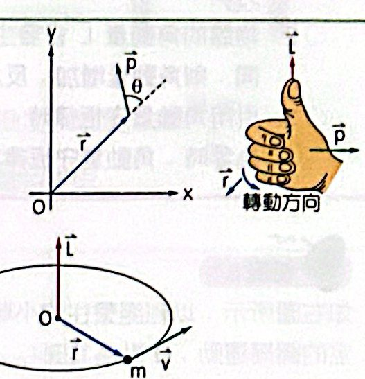
| 符號 | 意思 | 單位 |
|---|---|---|
| L | 角動量 | kg·m²/s |
| r | 從參考點指到物體的位置向量 | m |
| p | 物體的動量 mv | kg·m/s |
| θ | r 和 p 的夾角 | — |
| r sinθ | 參考點到動量作用線的垂直距離（「力臂」） | m |
| ω | 角速度（每秒轉幾弧度） | rad/s |
| × | 外積：大小 ＝ rp sinθ，方向用右手定則 | — |
「角動量 ＝ 動量 × 動量的作用線離參考點的垂直距離。」
右手四指沿轉動方向彎曲，大拇指就是 L 的方向（也是角速度 ω 的方向）。逆時針轉 ⇒ 指出紙面。
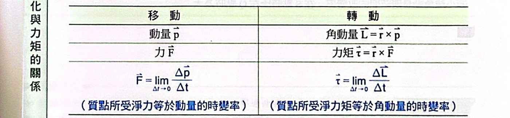
要解決的問題：什麼情況下角動量不會變？——和「沒有外力 ⇒ 動量守恆」同一個句型：沒有力矩 ⇒ 角動量守恆。
| 符號 | 意思 |
|---|---|
| τ | 對參考點的合力矩 |
| ΔL | 角動量的變化（對同一個參考點） |
「力矩推了多久，角動量就改變多少；沒有力矩，角動量就不變。」
力的作用線永遠通過參考點（如繩子穿過小孔拉球、太陽拉行星）⇒ r 和 F 平行，力臂 ＝ 0 ⇒ τ ＝ 0 ⇒ 角動量守恆。
0.5 kg 的球，半徑 0.8 m、速率 2 m/s；從下面把繩子拉短到 0.4 m：
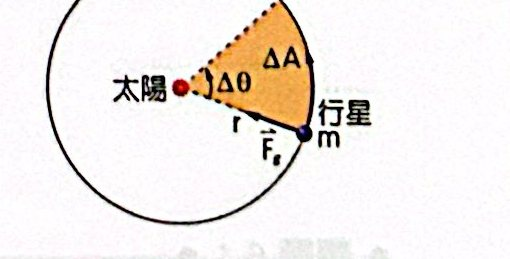
| 符號 | 意思 |
|---|---|
| ΔA/Δt | 面積速率：連線每秒掃過的面積 |
| r | 物體到中心（太陽）的距離 |
| ω | 角速度 |
| L、m | 角動量、物體質量 |
「面積速率和角動量只差一個 2m 倍」⇒ 一個不變，另一個就不變。
角動量守恆 ⇒ 面積速率固定 ⇒ 克卜勒第二定律（等面積定律）其實就是角動量守恆。
反過來：知道面積速率 A，就知道 L ＝ 2mA。
| 移動 | 轉動 |
|---|---|
| 動量 p ＝ mv | 角動量 L ＝ rp sinθ（圓周 mvr ＝ mr²ω） |
| 衝量 FΔt ＝ Δp | 力矩 × 時間 τΔt ＝ ΔL |
| 外力和為零 ⇒ 動量守恆 | 合力矩為零 ⇒ 角動量守恆 |
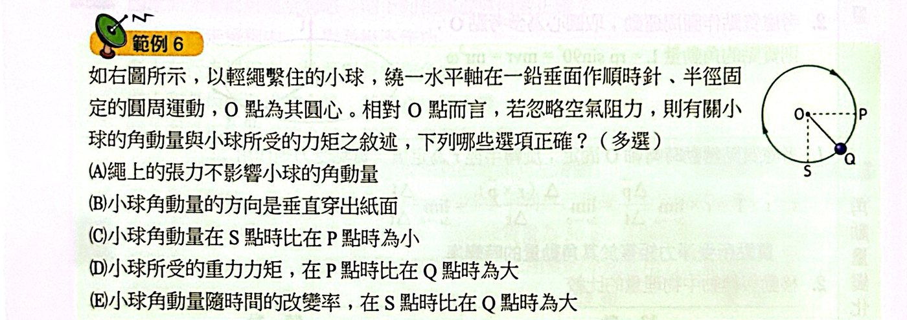
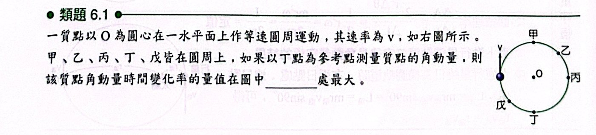
參考點取在圓上的丁。角動量變化率 ＝ 合力（向心力）對丁的力矩。
向心力作用線一定通過圓心 O；丁到這條線的距離最大（＝ R）的時候，是質點位在與 O丁 垂直的位置 ⇒ 圓的左、右兩側，選項中為 丙。
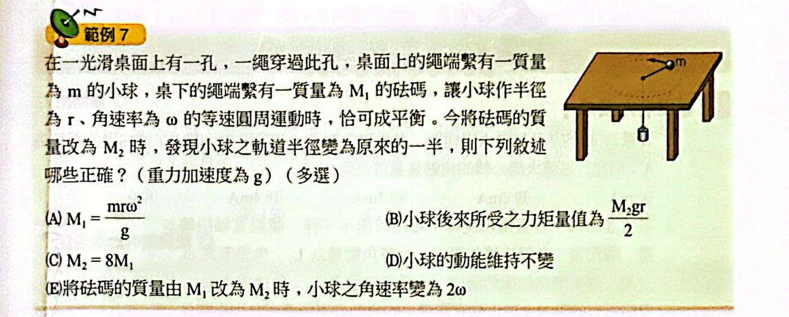
(A) ○ M1g ＝ mrω² ⇒ M1 ＝ mrω²/g
繩的拉力通過小孔 ⇒ 角動量守恆：半徑減半，mvr 不變 ⇒ v 變 2 倍，ω ＝ v/r 變 4 倍
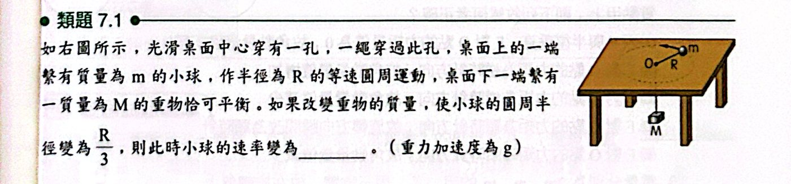
原本 Mg ＝ mv²/R ⇒ v ＝ √(MgR/m)
角動量守恆 mvR ＝ mv'(R/3) ⇒ v' ＝ 3v ＝ 3√(MgR/m)
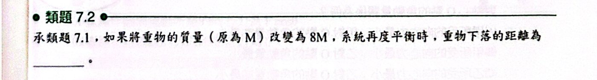
新半徑 r，角動量守恆 v' ＝ vR/r：m(vR/r)²/r ＝ 8Mg ＝ 8mv²/R ⇒ r³ ＝ R³/8 ⇒ r ＝ R/2
重物下降 R − R/2 ＝ R/2
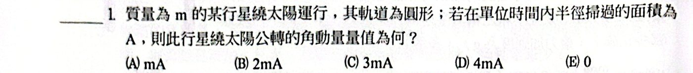
面積速率 A ＝ L/(2m) ⇒ L ＝ 2mA
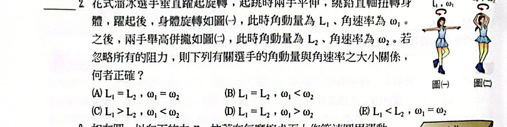
騰空後不受外力矩，角動量守恆 L1 ＝ L2；兩手收攏轉動慣量變小 ⇒ ω 變大，ω1 ＜ ω2
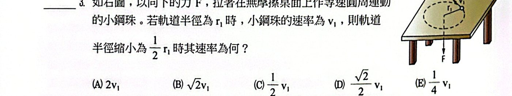
拉力通過小孔，角動量守恆：mv1r1 ＝ mv(r1/2) ⇒ v ＝ 2v1
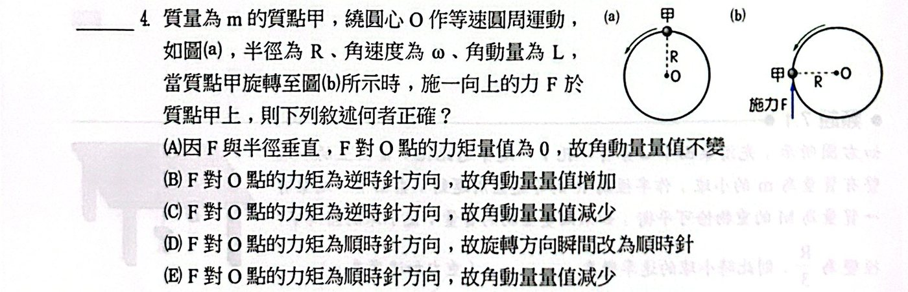
質點逆時針轉（L 指出紙面）。在 (b) 甲位於 O 的左側，r 向左、F 向上 ⇒ τ ＝ r × F 指入紙面，是順時針力矩，和 L 反向 ⇒ 角動量減少。
（F 與半徑垂直，力矩最大，不是 0。）
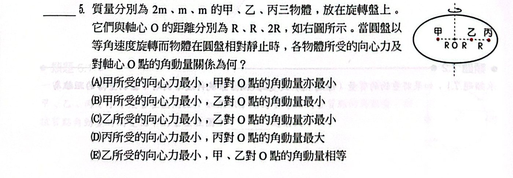
向心力 mω²r：甲 2mR、乙 mR、丙 2mR ⇒ 乙最小
角動量 mr²ω：甲 2mR²、乙 mR²、丙 4mR² ⇒ 乙最小
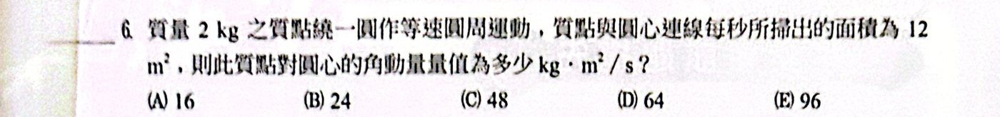
L ＝ 2m × (面積速率) ＝ 2 × 2 × 12 ＝ 48 kg·m²/s
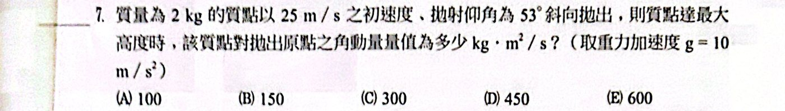
vx ＝ 25cos53° ＝ 15、vy ＝ 20；最大高度 H ＝ 20²/20 ＝ 20 m
最高點速度水平，對原點的力臂 ＝ H ⇒ L ＝ m vx H ＝ 2 × 15 × 20 ＝ 600
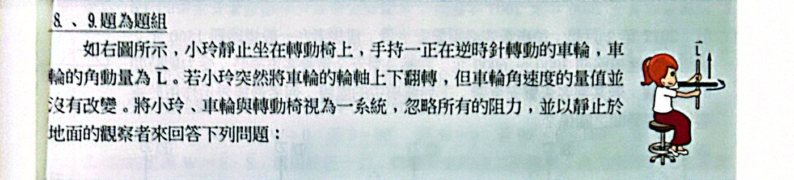
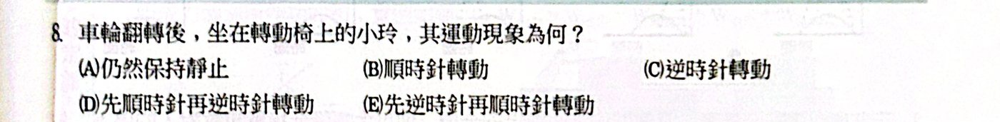
系統鉛直方向不受外力矩，總角動量守恆 ＝ L（向上）。
車輪翻轉後變成 −L ⇒ 小玲＋轉椅必須得到 ＋2L（向上）⇒ 從上往下看逆時針轉動（和車輪原本方向相同）。
| 對象 | 翻轉前 | 翻轉後 |
|---|---|---|
| 車輪 | L | −L |
| 小玲與轉動椅 | 0 | 2L |
| 小玲、轉動椅與車輪 | L | L（守恆） |
不論是否繫安全帶，乘客的動量變化相同 ⇒ F–t 圖面積相同。
沒繫安全帶時，乘客先繼續往前衝，較晚才撞上前方的方向盤或車窗，而且撞擊時間短 ⇒ 力晚出現、時間短、峰值大 ⇒ (C)。
撞擊時人的動量變化 Δp 固定（由原速度到停止）。由衝量–動量定理 F ＝ Δp/Δt，安全帶和氣囊都能延長作用時間，使平均作用力變小；氣囊還把力分散在較大面積，降低壓力，因此減輕傷害。
v ＝ 72 km/h ＝ 20 m/s，0.20 m 內停下：a ＝ v²/(2s) ＝ 400/0.4 ＝ 1000 m/s²
F1 ＝ 30 × 1000 ＝ 3.0×104 N
停止距離 0.50 m：a ＝ 400/1.0 ＝ 400 ⇒ F2 ＝ 12000 N
F2/F1 ＝ 0.20/0.50 ＝ 0.4（同樣動能，距離愈長力愈小）